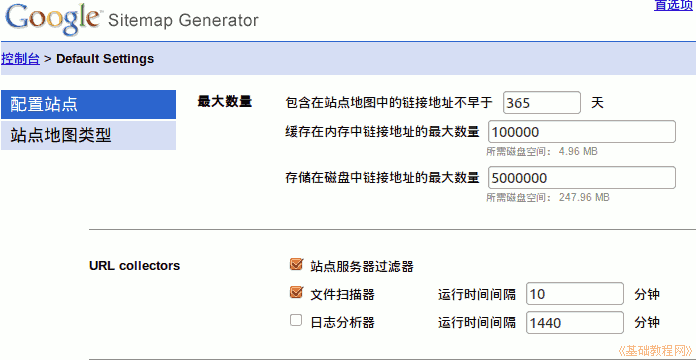
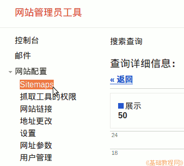
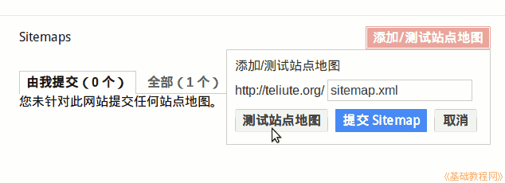
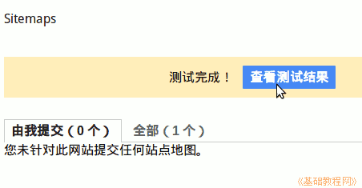
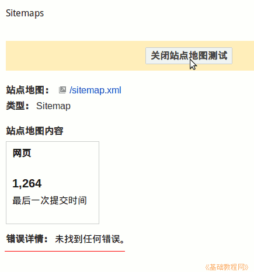
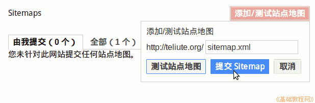
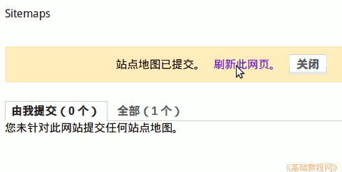
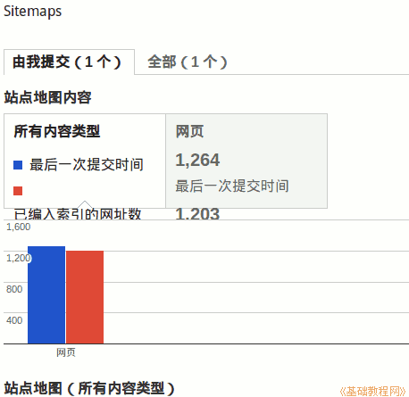

谷歌网站管理员工具使用指南
作者：TeliuTe 来源：基础教程网
三、Sitemaps 网站地图 返回目录 下一课网站地图可以让搜索引擎更好地收录网页；
1、上传 Sitemaps
1）生成网站地图的工具很多，可以在网上查找，或者自己安装一个谷歌的网站地图生成器；

2）把生成好的sitemap.xml文件放到网站根目录，然后在浏览器中测试能够正常打开；
3）回到网站管理员工具，点左边导航栏的“网站配置－Sitemaps”；

4）在右边的显示区点右上角的“添加/测试网站地图”按钮；
5）在出来的文本框中，输入sitemap.xml 地址，点击“测试站点地图”；

6）稍等，点击出来的“查看测试结果”，看看有没有什么问题；

7）应该显示“没找到任何错误”，点击上边的“关闭站点地图测试”，返回到上一页；

8）再点“添加/测试网站地图”按钮，点击“提交Sitemap”按钮；

9）稍等提示成功，点击“刷新此网页”；

10）然后可以查看详细的信息，有多少个页面链接，收录了多少；

本节学习了 Sitemaps 网站地图的基础知识，如果你成功地完成了练习，请继续学习下一课内容；
本教程由86团学校TeliuTe制作|著作权所有
基础教程网：http://teliute.org/
美丽的校园……
转载和引用本站内容，请保留版权信息和本站链接。